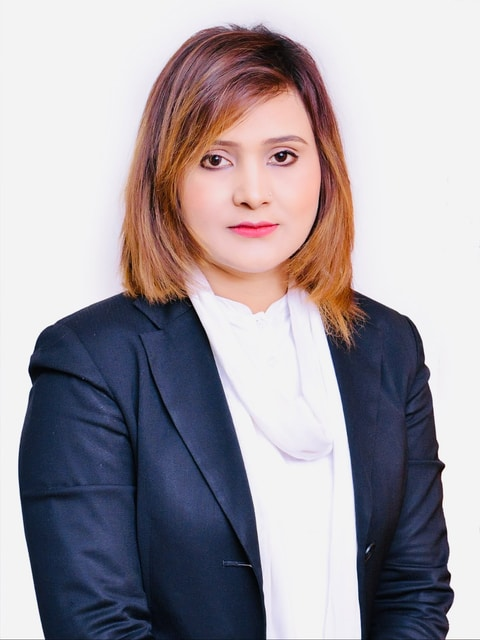

Islamia Law College
Peshawar · Law Lecturer
Taught core law subjects to LLB students and developed course materials and examination papers.
ADVOCATE HIGH COURT · LAHORE
Experienced counsel. Considered advice. A commitment to rights.
Qurat-ul-Ain Viirk brings over eighteen years of legal practice to the
matters that shape lives and institutions.

ADVOCATE HIGH COURT
Lahore, Pakistan18+
YEARS OF LEGAL PRACTICE2007
LOWER COURTS ENROLMENT2009
HIGH COURTS ENROLMENT2024— PRESENT
INSTITUTIONAL LEGAL ADVISORYTHE PERSON BEHIND THE PRACTICE
Courtroom experience.
Clarity in counsel.
People at
the centre.
Qurat-ul-Ain Viirk is an independent Advocate High Court based in Lahore, with 18+ years of experience in Pakistan’s legal system. Her practice spans civil, criminal, corporate and banking law.
From court pleading and legal drafting to contract vetting and due diligence, her work brings together litigation and advisory experience. Alongside professional practice, she maintains a commitment to human rights, women’s rights and legal education.
FOCUSED EXPERIENCE
Legal counsel across litigation, corporate advisory, regulatory matters and rights-focused practice.
Representation, pleadings and applications across civil proceedings and High Court matters.
Discuss your matterCourt representation, legal drafting and advocacy in criminal proceedings in Punjab.
Discuss your matterContract review, legal documentation, due diligence and advisory support for corporate clients.
Discuss your matterBanking disputes, loan recovery matters, financial litigation and regulatory documentation.
Discuss your matterProperty, planning, land acquisition, zoning regulations and LDA compliance.
Discuss your matterAnti-harassment law, workplace grievances and institutional policy formulation.
Discuss your matterRights-focused advocacy concerning women’s rights and gender-based violence redressal.
Discuss your matterLegal opinions, affidavits, notices, agreements, document review and legal research.
Discuss your matterArbitration proceedings, dispute resolution, legal representation and advisory support in commercial and civil disputes.
Discuss your matterEvery legal matter begins with understanding its context.Start a conversation
Serving as Legal Adviser to RUDA, Allied Bank Limited and Urban Developers since 2024, with work spanning regulatory compliance, land development and project documentation.
Advisory responsibilities include reviewing contracts, agreements and legal instruments for urban development initiatives.
Ravi Urban Development Authority
Allied Bank Limited
Central Park, Lahore
EXPERIENCE THAT INFORMS
Independent court practice and institutional counsel across Lahore and Punjab.
RUDA, ABL & Urban Developers · Lahore
Civil Courts & Banking Courts · Lahore
Lahore Development Authority Courts
Civil, Criminal & Corporate · Lahore & Punjab
For dignity.
For equality.
For people.
RIGHTS-FOCUSED ADVOCACY
Qurat-ul-Ain Viirk’s commitment to human rights and women’s rights sits alongside her litigation and advisory practice. Her areas of focus include workplace protections, gender-based violence redressal and public legal education.
Legal perspectives, professional commentary and selected media appearances, brought together in one place.
INSIGHTS
Informed perspectives on law, justice, human rights, women’s rights, institutional accountability, and emerging legal developments.
VIDEO & MEDIA
Recorded perspectives on law, rights and professional practice.
MEDIA & INTERVIEWS
Interviews, discussions and professional appearances, brought together in one place.
THE WORK BEHIND THE COUNSEL
Legal work shaped by research, clear documentation and attention to each matter’s procedural progress.
Representation, pleading and argument before competent courts, with ongoing follow-up on case progress.
Applications, affidavits, chamber summons, notices of motion, replies and property-related documents.
Research and review of legal questions to inform opinions, drafting and court submissions.
Legal opinions, client advisory and case-status reports for individuals, companies and senior counsel.
Review of agreements and legal documents, with opinions and suggestions for corporate and institutional matters.
Policy formulation and advisory work relating to institutional responsibilities, compliance and workplace concerns.
Teaching, academic mentorship and capacity building form another part of Qurat-ul-Ain Viirk’s professional journey.
Peshawar · Law Lecturer
Taught core law subjects to LLB students and developed course materials and examination papers.
Okara · Law Lecturer
Contributed to legal education through a teaching appointment alongside her professional journey.
Professional enrolments and academic qualifications that underpin the practice.
Advocate Lower Courts
15 May 2007Advocate High Courts
24 August 2009LLB 2006
QLC / Punjab University, LahoreM.A. Political Science 2007
Punjab University, LahoreP.G. Dip. in Foreign Sciences 2024–25
Punjab University evening program, LahoreUrdu
NativeEnglish
ProfessionalPunjabi
FluentMultiple debating competition winner during legal education.
Active human rights and women’s rights advocacy.
CONSIDER YOUR NEXT STEP
Contact the office to discuss your legal matter and consultation requirements.
4B One Lahore, Qurban Police Lines,
Jail Road, Lahore